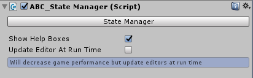

Inspector Settings
Overview
StateManager needs to be added to objects to recieve ability effects and be known by the ABC system for other functionality. The component once attached can open up an editor window. There is also additional settings in the inspector window which are detailed below.

Show Help Boxes
If ticked then blue help boxes will appear all over the configuration with setting information and tips.
Update Editor At Run Time
If enabled then the configuration window will update when the window isn’t in focus. This will decrease performance but is useful to use when on the diagnostic screens (as the logs will update without having to keep clicking the configuration window). If disabled then the window will update whilst it is focused.
State Manager
Clicking this button will load the State Manager Configuration Window. This can also be opened from Windows > ABC > State Manager. More information on the settings within the State Manager Window can be found by clicking the following link: State Manager Config Documentation.